- The performance of a classification algorithm measures how well it can assign observations x to classes y.
- Knowing an algorithm's performance is important at three points:
- To guide training towards better performance.
- To stop training when performance no longer improves.
- After training ends, to assess the algorithm's final performance.
Next, we'll learn different ways to measure an algorithm's performance.
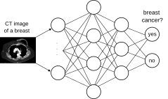
{kind=link}
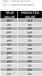
Naive approach: Calculate the error rate.
Error rate: Proportion of observations that were incorrectly classified.
Here: 14 observations, 4 errors = 28.6% error rate.
Or 100% - 28.6% = 71.4% accuracy.
Problem: The classifier can make two types of errors that are indistinguishable here:
- False positive: cancer is detected in an image even though none is present.
- False negative: cancer is not detected in an image that contains it.
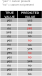
2x2 table summarizing the true and predicted values of observations.
Calculate the
false positive rate: 1 / (1 + 5) = 16.6%
false negative rate: 3 / (3 + 5) = 37.5%
There's a significant imbalance between false positive and false negative errors! Which error is more important?
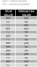
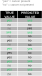
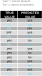
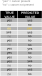
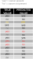
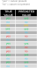
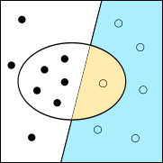
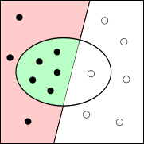
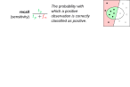
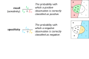
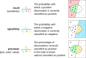
The F-score (also F1-score) is the harmonic mean of precision and recall (sensitivity), where both values are weighted equally.
General: The Fβ-score with different weights β that scale the importance of recall.
For F2 recall is twice as important as precision.
For F0.5 recall is half as important as precision.
Example: Breast cancer screening program. One in 100 women actually has breast cancer. This means: negative cases are overrepresented 1:100.
- A classifier that always predicts "no breast cancer" has an accuracy of 99%!
- However, it has a false positive rate of 0% and a false negative rate of 100%.
- If only accuracy is reported, the classifier looks very good. In reality, however, it's absolutely useless for the application.
- Accuracy: When classes are equally frequent and false positive and false negative errors are equally severe.
- Recall (sensitivity): When classes are not equally frequent and false negative errors are particularly severe.
- Precision (positive predictive value) or specificity: When classes are not equally frequent and false positive errors are particularly severe.
- F1: When classes are not equally frequent and both false positive and false negative errors are severe.
- Knowing a classifier's performance is crucial for guiding training and assessing the classifier's effectiveness.
- Classifiers make different types of errors:
- False positive: a negative observation is classified as positive.
- False negative: a positive observation is classified as negative.
- Depending on the importance of different errors and the class balance, various performance indicators are used:
- Accuracy
- Precision (positive predictive value), recall (sensitivity), specificity
- F1 or Fβ Score
For the true and predicted values in the table on the right:
- Count the false positive, false negative, true positive, and true negative predictions.
- Calculate the error rate and accuracy (= 1 - error rate), precision, recall, and specificity.
- Calculate the F1 Score.
- For which tasks is this classifier well suited or not well suited?
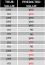
- fp = 4;fn = 1;tp = 6;tn = 3
- Error rate: 5/14 = 0.36
Accuracy: 1 - 0.36 = 0.64
Recall: rp / (tp + fn) = 6/ (6 + 1) = 0.86
Specificity: tn / (tn + fp) = 3 / (3 + 4) = 0.42
Precision: tp / (tp + fp) = 6 / (6 + 4) = 0.6 - F1-Score: 2 * (precision * recall) / (precision + recall)
= 2 * (0.6 * 0.86) / (0.6 + 0.86) = 0.71 - This classifier is well-suited for tasks where false positives are not critical. For example pre-selection of social media posts that violate community guidelines that are then reviewed by humans.